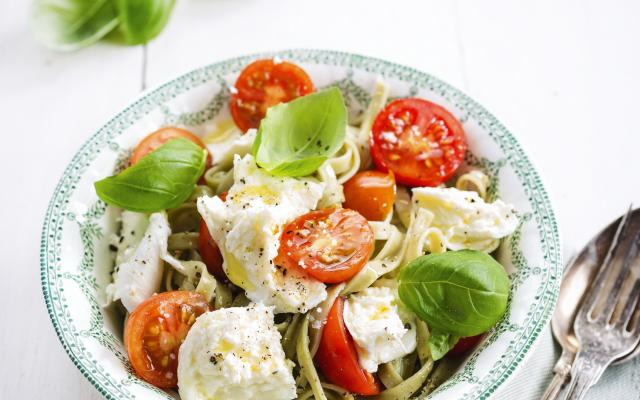

pasta pasta met kersttomaatjes

Ingredienten
halve paprika
75 g kersttomaatjes
50 g gerookte zalm
1 teentje knoflook
125 g mascarpone
peper
Bereiden
- snij de paprika in kleine stukje en halveer de kerstomaatjes. Snij de gerookte zalm in stukjes.
- stoof uw teentje knoflook in olijfolie tot de olie het aroma heeft overgenomen en verwijder dan het teentje.
- Kook ondertussen het water voor de pasta en voeg de pasta aan het water toe op kookpunt.
- Voeg de stukjes paprika en kerstomaatjes toe, laat 5 minuutjes garen en breng op smaak met peper.
- Voeg de zalm en de mascarpone toe aan de paprika en kerstomaatjes en laat nog eens 5 minuutjes garen.
- Giet de pasta af en voeg bij aan de saus.
- Eet smakelijk!